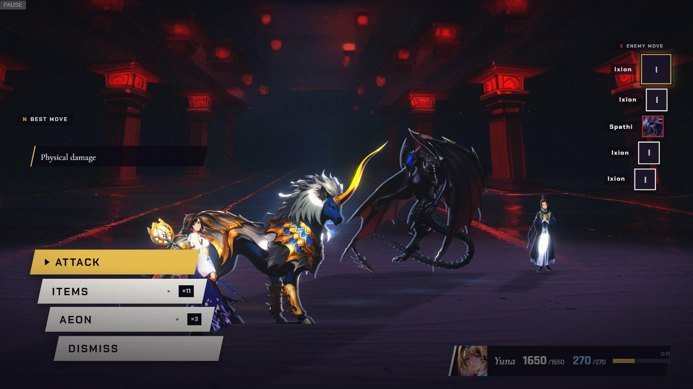

1
Mega Flare next
CMarks in the world — Link 3: Ixion out. Spathi’s count reads 1; Mega Flare is next
Real engine frame + real HUD (Chapter X battle, Yuna-only line-up, candidate art served in) · overlays are the mockup · aeon numbers are Chapter X’s shipped values
CONCEPT